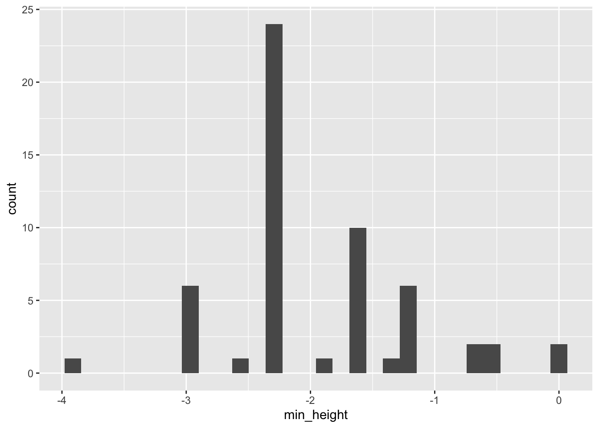
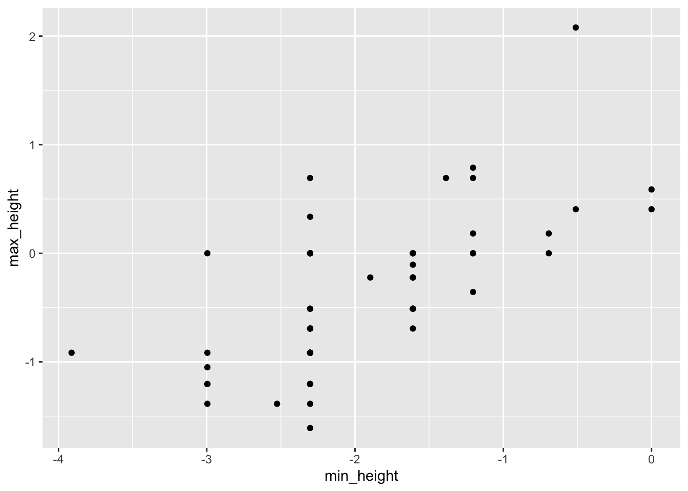
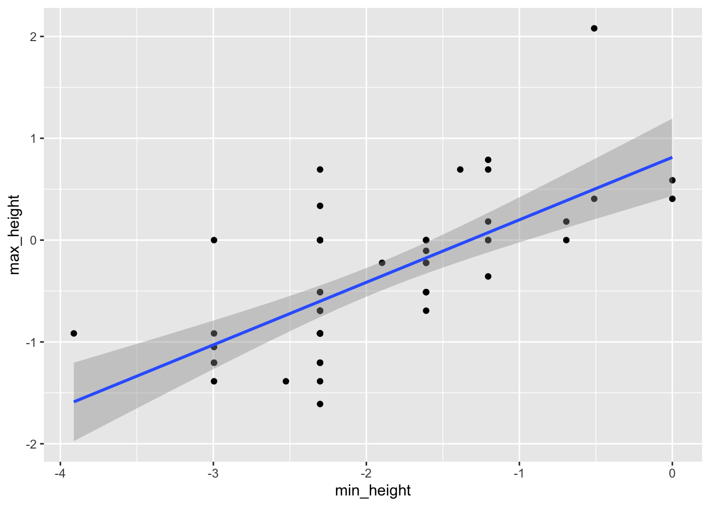

Chapter 3 Introduction to R and RStudio
3.1 Learning Outcomes
At the end of this session you should be able to:
- Perform basic arithmetic using R/RStudio
- Identify the major components of the RStudio interface
- Create an Rmd file and use it to document a sequence of R functions
- Read in a data set and perform basic data summary procedures in R
3.2 Getting started
For this session, we will be working in RStudio (see section 2 for install directions). Alternatively, you can work in a cloud-based tool such as Posit Cloud https://posit.cloud or Google Colab https://colab.research.google.com, however we will not be going over how to use these tools in detail today.
3.2.1 Difference between R and RStudio
In this workshop, we will be working in RStudio. So what is the difference between R and RStudio? R is a programming language (specifically a statistical analysis programming language), while RStudio is an Integrated Development Environment, or IDE. You can think of it as a interface with R that aids the analyst. RStudio offers a number of features, mostly related to visual presentation of information, that make writing and working with R code easier.
3.2.2 Overall layout
There are four panels in the RStudio interface (though you may only have three open when you first start it), each has valuable information.
- Console / Terminal panel (lower-left)
- Environment / History / Git (upper-right)
- Files / Plots / Packages / Help (lower-right)
- Source / Editor (upper-left)
3.2.3 File management
Good file management is important in data analysis. We’ll start working on this now.
- Make a
ESA_QuantCommdirectory / folder - Make a
datadirectory / folder withinESA_QuantComm - Make a
scriptsdirectory / folder withinESA_QuantComm - In RStudio, set working directory to your new
ESA_QuantCommdirectory
3.2.3.1 Setting your working directory
Point-and-click method - Use ‘Session’ > ‘Set Working Directory’ > ‘Choose Directory’.
Using the R Console:
Next, we will make an R Project. The benefit to using R Projects is that it will reside within your project folder and act as “glue” to make it easier to connect your data files to your code files. It also encourages good file management by having related files all in the same location or set of folders. If you use R Projects, you can skip this step of setting a working directory, which won’t be needed, as it will use “relative paths” to find your files, located in the same location as the .Rproj file that the next step will create. This can be especially helpful if you work on more than one computer, or are sharing files with collaborators, who won’t need to change the working directory anymore.
3.2.4 Making an R Project
Let’s make a new R Project associated with your ESA_QuantComm directory.
To make a new project, got to the upper right-hand side of the RStudio interface, where it says Project: (None).
Click the little downward arrow, select “New Project”, then select “Existing Directory” from the window that pops up.
Use the graphical user interface (GUI) to navigate to the ESA_QuantComm directory, then select “Create Project”.
3.3 R as a calculator
We can use R just like any other calculator. Execute the commands below in the RStudio Console panel. After you write the code, press enter to execute it. NOTE: in most cases, white space (i.e., extra spaces) is ignored by R. So 3+5 and 3 + 5 result in identical output.
## [1] 8There’s internal control for order of operations (PEM DAS = parentheses, exponents, multiplication, division, addition, subtraction). Compare the lines below, noting the position of the parentheses.
## [1] 22## [1] 22## [1] 36COMMON ERROR! - incomplete line of code
In the console, you should see the>at the start of each new line, but sometimes something may go wrong and you will see a+at the start of the line instead. This means that R is waiting for you to complete the line of code. A very common mistake that causes this is failing to “close” parantheses. Can you find the mistake in the code chunk below?
> 3 * (5 + 7
+
+3.3.1 Internal functions
There are a ton of internal functions, and a lot of add-ons via additional packages. Here are a few functions.
## [1] 2## [1] 5## [1] 3.14Functions are always followed by parentheses. Inside the parentheses is where you put the function arguments. You can explicitly define arguments (which is good practice) or you can allow them to be defined implicitly. For example, the function round has two arguments, the number you want to round, x, and the number of digits you want to round to, digits. Above we used implicit argument assignment. Here’s an example of assigning values to these arguments explicitly.
## [1] 3.143.4 Documenting your work with R Markdown
Using R Markdown, we can integrate descriptive text, R code, and the output from that code, into a seamless document that can be easily reproduced.
Markdown is a simple formatting syntax for authoring HTML, PDF, and MS Word documents.
While some of the details of using Markdown (and thus R Markdown) can get tricky, the basics are very easy to pickup.
RStudio even comes with two very useful tools to learn and use Markdown.
First, go to the Help tab and select Markdown Quick Reference.
Second, a more detailed reference can be found in the Help -> Cheatsheets section.
3.4.1 Markdown vs R Markdown
R Markdown is a tool that allows you to make a simple text document using the Markdown formatting syntax with R code and associated output embedded.
3.4.2 Starting with R Markdown
- Go to the new file button (upper left corner of the RStudio interface, or
File->New File) and choose the R Markdown option. - You may be prompted to install new R packages, let’s go ahead and do this if you are prompted.
- A screen will pop-up requesting information such as Title, Author, and Output Format. Give your new doc a title and select HTML as the output format.
- A new file that is pre-populated with a bunch of text will open in the
Sourcepanel.
We will go over each section briefly:
- Header
- Sections
- Code Chunks (The code chunk syntax is very specific and important. As a beginner, you may choose to use the GUI button to make empty chunks - it’s the little green box with a C in it and a plus sign.)
When you click the Knit button a document will be generated that includes both content as well as the output of any embedded R code chunks within the document. Click Knit now to see what happens.
3.5 R script file
Another common file format for documenting your work is an .R script file. Script files are primarily filled with only code and minimal comments* that you can include to explain that code.
Important: within an R file, you can use the
#sign to add comments. Anything written after the # is not interpreted when you run the code. You can print a script file, but it will print as a simple text file without any formatting.
3.5.0.1 Challenge
In the Rmd file we created above, create a new R chunk and add some math operations. Now Knit the new file.
3.6 Value types in R
There are several different types of values that can be used in a programming language. The ones that are most common in R are:
- character: A character string. This can be numbers, letters, symbols, or a combination of these things. This is denoted by putting the value inside quotes (“a”, “cat”, “Aayush”, “89”, “2e34g6”)
- double: A numeric value that could be a decimal (not just whole numbers). Numbers are not inside quotes.
- int: A numeric value that can only be a whole number
- factor: A value that represents a grouping variable or a treatment level. For example, if we had a study with 4 sites, labeled 1, 2, 3, and 4, we would need to treat those as factors, not as numeric values. Similarly, if I wanted to compare academic success among class years labeled freshmen, sophomore, junior, and senior, I would need to treat those as factors, not as character values.
- logical: A value that represents TRUE or FALSE. Numbers can be forced into logical values, but only 0 is assigned FALSE; all other values are assigned TRUE.
There are other types in R, but these are the most important to identify as we get started.
3.7 Variables and objects
There are several basic types of data structures in R.
- VECTORS: One-dimensional arrays of numbers, character strings, or logical values (T/F)
- FACTORS: One-dimensional arrays of factors (Stop - Let’s discuss factors)
- DATA FRAMES: Data tables in which the various columns may be of different type
- MATRICES: In R, matrices can only be 2-dimensional, anything higher dimension is called an array (see below). Matrix elements are numerical; some functions, like the transpose function t(), only work on matrices
- ARRAYS: higher dimensional matrices are called arrays in R
- LISTS: lists can contain any type of object as list elements. You can have a list of numbers, a list of matrices, a list of characters, etc., or any combination of the above.
3.8 Practice with variables
Let’s define a variable.
And another
Work with vars
## [1] 18Make a new variable
3.8.1 Make a vector
Let’s combine multiple values into a vector of length greater than 1. This introduces us to the one of the most prevalent functions in R, c() - i.e., the combine function.
# Vector of variables
my_vect <- c(my_var, my_var2)
# Numeric vector
v1 <- c(10, 2, 8, 7, 11, 15)
# Char vector
pets <- c("cat", "dog", "rabbit", "pig")Making a vector of numbers in sequence
3.9 Exploring variable elements
You can get specific elements from vectors and other data structures
- Introduction to the square brackets
[]
## [1] "cat"- Getting a number of elements, in sequence
## [1] "rabbit" "pig"- Getting a number of elements, not in sequence
## [1] "cat" "pig"3.10 Data frames
3.10.1 Reading in your own data
One of the most basic things you will need to do in R is read in your own data set. You can read in Excel files, simple text files, and even files from Google Sheets (this is a bit more complicated though). But the easiest type of file to read in is a comma separated values (CSV) file. You can save an Excel workbook (or Numbers workbook or Google Sheet) as a CSV file by using the “Save as …” menu item.
Let’s read in a data set of trait measurements from 56 different plant species using the function read.csv.
First, you’ll need to download the data set from the workshop site.
Second, move the file to the data sub-folder in your ESA_QuantComm folder.
Then, we’ll read in the file. NOTE: you may need to adjust the path to the file.
Let’s have a brief look at the first and last six rows of data.
## species anemogamous autogamous entomogamous annual biennial
## 1 arisarum_vulgare 0 0 1 0 0
## 2 alisma_plantago_aquatica 0 0 1 0 0
## 3 damasonium_alisma 0 0 1 1 1
## 4 asphodelus_aetivus 0 0 1 0 0
## 5 narcissus_tazetta 0 0 1 0 0
## 6 narcissus_elegans 0 0 1 0 0
## perennial lfp min_height max_height bfp spikiness hairy_leaves
## 1 1 1.7917595 -2.302585 -0.9162907 1.5 0 0
## 2 1 1.3862944 -2.302585 0.0000000 7.5 0 0
## 3 1 1.7917595 -2.995732 -1.2039728 6.5 0 0
## 4 1 1.6094379 0.000000 0.4054651 4.0 0 0
## 5 1 1.6094379 -1.609438 -0.6931472 2.0 0 0
## 6 1 0.6931472 -2.525729 -1.3862944 10.5 0 0## species anemogamous autogamous entomogamous annual biennial
## 51 lythrum_tribracteatum 0 0 1 1 0
## 52 diplotaxis_erucoides 0 1 1 0 0
## 53 chrozophora_tinctoria 0 0 1 1 0
## 54 medicago_intertexta 0 0 1 1 0
## 55 trifolium_squamosum 0 0 1 1 0
## 56 hedysarum_coronarium 0 0 1 0 0
## perennial lfp min_height max_height bfp spikiness hairy_leaves
## 51 0 1.6094379 -2.302585 -1.6094379 7.0 0 0
## 52 0 2.3978953 -2.302585 -0.6931472 2.5 0 1
## 53 0 1.9459101 -2.302585 -0.9162907 7.0 1 2
## 54 0 0.6931472 -1.203973 -0.3566749 4.5 0 1
## 55 0 1.3862944 -2.302585 -0.9162907 5.5 0 2
## 56 1 1.0986123 -1.609438 0.0000000 5.0 0 13.10.1.1 summary function
Next we’ll use the summary function to examine this data set.
summary returns many standard statistics.
When doing data exploration, a few things you want to look at are:
- How do the mean and median values within a variable compare?
- Do the min and max values suggest there are outliers?
- Which variables (i.e., columns) are quantitative (numeric) versus categorical (factors or characters)
## species anemogamous autogamous entomogamous
## Length:56 Min. :0.0000 Min. :0.0000 Min. :0.0000
## Class :character 1st Qu.:0.0000 1st Qu.:0.0000 1st Qu.:0.0000
## Mode :character Median :0.0000 Median :0.0000 Median :1.0000
## Mean :0.3929 Mean :0.2143 Mean :0.6071
## 3rd Qu.:1.0000 3rd Qu.:0.0000 3rd Qu.:1.0000
## Max. :1.0000 Max. :1.0000 Max. :1.0000
## annual biennial perennial lfp
## Min. :0.0000 Min. :0.0000 Min. :0.0000 Min. :0.6931
## 1st Qu.:0.0000 1st Qu.:0.0000 1st Qu.:0.0000 1st Qu.:1.0986
## Median :0.0000 Median :0.0000 Median :1.0000 Median :1.3863
## Mean :0.4821 Mean :0.1071 Mean :0.5357 Mean :1.4872
## 3rd Qu.:1.0000 3rd Qu.:0.0000 3rd Qu.:1.0000 3rd Qu.:1.7918
## Max. :1.0000 Max. :1.0000 Max. :1.0000 Max. :2.3979
## min_height max_height bfp spikiness
## Min. :-3.912 Min. :-1.6094 Min. : 1.500 Min. :0.0000
## 1st Qu.:-2.303 1st Qu.:-0.9163 1st Qu.: 5.489 1st Qu.:0.0000
## Median :-2.303 Median :-0.5108 Median : 7.000 Median :0.0000
## Mean :-1.941 Mean :-0.3784 Mean : 6.555 Mean :0.3393
## 3rd Qu.:-1.609 3rd Qu.: 0.0000 3rd Qu.: 8.000 3rd Qu.:0.0000
## Max. : 0.000 Max. : 2.0794 Max. :10.500 Max. :2.0000
## hairy_leaves
## Min. :0.000
## 1st Qu.:0.000
## Median :0.000
## Mean :0.625
## 3rd Qu.:1.000
## Max. :2.0003.11 Looking for missing elements
Many analyses in quantitative community ecology rely on multivariate statistical approaches, such as PCA, RDA, and NMDS. These analyses require complete data sets, and will not work if there are missing values. Below we go through an example of how to search for and replace a missing value.
NOTE: data imputation (i.e., replacing missing values with approximate values) is an area of study all by itself and we will not be covering it here. We encourage you to look in to this topic on your own, but here is a primer that might be useful to start with – https://libguides.princeton.edu/R-Missingdata.
## create matrix object
m <- matrix(c(1:8,NA), nrow=3, ncol=3) # a 3x3 matrix
## identify missing values
anyNA(m)## [1] TRUE## [1] FALSE## [1] FALSE## [1] TRUE## [,1] [,2] [,3]
## [1,] FALSE FALSE FALSE
## [2,] FALSE FALSE FALSE
## [3,] FALSE FALSE TRUE## Warning in is.na(df): is.na() applied to non-(list or vector) of type 'closure'## Warning in is.na(df): is.na() applied to non-(list or vector) of type 'closure'3.12 Basic data visualization
There are many data visualization tools in R, and a very rich ecosystem of add-on packages that make it easy to create publication ready figures. Here we will learn a few basic visualization tools.
3.12.1 Visualization using the ggplot2 package
We are going to introduce a data visualization package called ggplot2.
This package is great for producing publication quality graphics, but the syntax
used to create a plot is a little more involved than base R (i.e., the graphics package).
3.12.2 Aside: Installing and loading packages
First, we need to install the ggplot2 package.
STOP did you install the tidyverse package?
Then load it:
NOTE: You will only have to install a new package once, but you will need to call the library function at the beginning of every new R session.
3.12.3 Histograms
Let’s make a histogram of minimum heights in the trait data set.
## `stat_bin()` using `bins = 30`. Pick
## better value with `binwidth`.
Let’s break down this call to introduce a few key things about ggplot
- ggplot: the initial canvas we’re working on
- geom: geometric objects (i.e. the type of plot - histogram, points, line, etc)
- aes: aesthetic mapping
3.12.4 Scatter plots
Next let’s make a scatter plot, showing min_height versus max_height.

THAT SEEMS SO COMPLICATED!
It’s true. The syntax for ggplot can seem pretty complicated. But the power of ggplot lies in the ability to lay several geometries (geoms) over each other. Also, each geometry has a rich set of options. For example, let’s add a trend line to the data we just plotted.
ggplot(data = trait_data, aes(x = min_height, y = max_height)) +
geom_point() +
geom_smooth(method = "lm")## `geom_smooth()` using formula = 'y ~
## x'